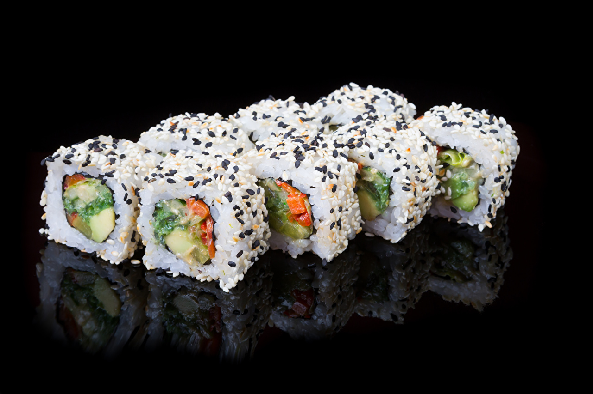

История происхождения суши
История возникновения суши берёт начало в Южной Азии, где варёный рис стали применять для приготовления
и консервации рыбы. Очищенная и разрезанная на небольшие кусочки рыба посыпалась солью и смешивалась с
рисом, после чего помещалась под пресс из камней, который через несколько недель заменялся крышкой. В
течение нескольких месяцев происходил процесс молочнокислой ферментации риса и рыбы, благодаря чему рыба
оставалась годной к употреблению в течение года. Рис, который превращался в клееобразную массу с
неприятным запахом, выбрасывался или использовался для приготовления новой партии рыбы. Приблизительно в
VII веке через Китай и Таиланд этот способ консервации получил распространение в Японии.
